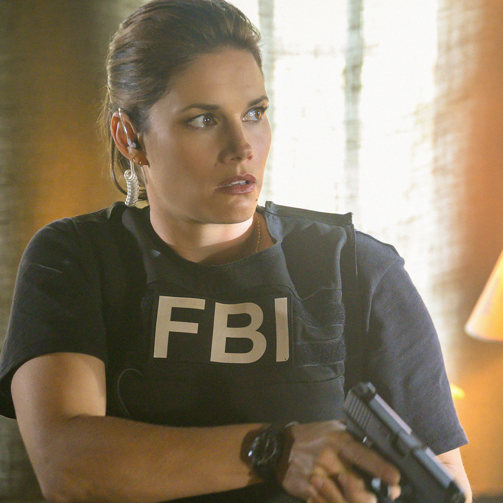

Perfil de estudiante
EDUAR ESPITIA ROMAN
Semestre actual:
Quinto Semestre
Hobbies:
Le gusta recorrer la ciudad en bicicleta
Series que mas le gusta:
Descripcion:
Es un drama de la Oficina Federal de Investigación. Esta unidad de élite pone todo su talento, intelecto y conocimientos técnicos al servicio de los grandes casos para mantener la seguridad de Nueva York y del país.
Actores:
Jubal Valentine
Maggie Bell
Omar Adom

Descripcion:
Superman & Lois es una serie de aventuras sobre la vida de Clark Kent y su pareja periodista Lois Lane mientras se enfrentan a una vida profesional y a una vida familiar un tanto agitada, añadiendo de que se tratan de unos padres jóvenes en la sociedad de hoy día.
Actores:
Clark Kent
Lois Lane
Jordan Kent
Descripcion:
Su trama, que se desarrolla en la ciudad de Nueva York, exhibe el trabajo de un grupo de investigadores del departamento de policía local, complementado con la labor desplegada por los fiscales del distrito, quienes se encargan de individualizar y procesar a los acusados de crímenes en los juicios.
Actores :
Mariska Hargitay
Richard Belzer

Ice-T